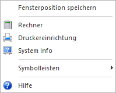
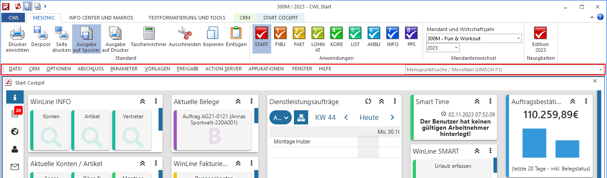

Standardmäßig stehen immer folgende Möglichkeiten zur Verfügung:

Ø Fensterposition speichern
Jedes Fenster kann an einen beliebigen Ort am Bildschirm verschoben werden, wodurch der Bildschirmaufbau individuell gestaltet werden kann. Durch Anwahl von "Fensterposition speichern" wird die Fensterposition des aktiven Fensters von der WinLine benutzerspezifisch gespeichert und beim nächsten Aufruf an der gespeicherten Stelle angezeigt.
Achtung
Es können nur solche Fenster gespeichert werden, die nicht in Vollbildmodus angezeigt werden.
Ø Rechner
Damit wird der Taschenrechner aufgerufen (ist auch über die Tastenkombination SHIFT + F2 möglich).
Ø Druckereinrichtung
Durch Anwahl dieser Funktion kann die Druckersteuerung geöffnet werden.
Ø System Info
Damit kann das Fenster mit der System-Information aufgerufen werden.
Ø Symbolleisten
Über die Option "Symbolleisten" kann das Erscheinungsbild der WinLine individualisiert werden.
ü WinLine corporate Menus
Durch
Aktivierung dieser Option wird die Menüleiste am Bildschirm angezeigt. In dieser
ist auch die Menüpunktsuche / MesoNavi enthalten.

ü Favoriten
Mit Hilfe dieser
Option kann das Fenster "Favoriten" angezeigt werden. Dieses dient zur schnellen
Navigation in der WinLine, sowie zur Bündelung der wichtigsten WinLine Objekte
(nähere Informationen entnehmen Sie bitte dem Kapitel Favoriten).
ü Standardeinstellungen
Durch
Anwahl dieser Option werden alle vorgenommenen Einstellungen im Programm
(Positionen der Buttonleisten, Fenstergröße der Applikation etc.) auf den
Standardwert zurückgesetzt - alle vorgenommenen Änderungen gehen hierbei
verloren.
ü beim Beenden speichern
Wird
diese Option gewählt (beim nächsten Aufruf des Menüpunktes wird bei dieser
Option ein Häkchen angezeigt), dann werden die Einstellungen bei jedem Beenden
des Programms gespeichert. Das kann unter Umständen auch etwas länger
dauern.
ü jetzt Speichern
Mit dieser
Option werden die gerade aktuellen Einstellungen abgespeichert.
Ø Hilfe
Mit dieser Option wird die Hilfe - bezogen auf das aktuell geöffnete Fenster - aufgerufen. Es handelt sich dabei um die gleiche Funktion, wie die F1-Taste.